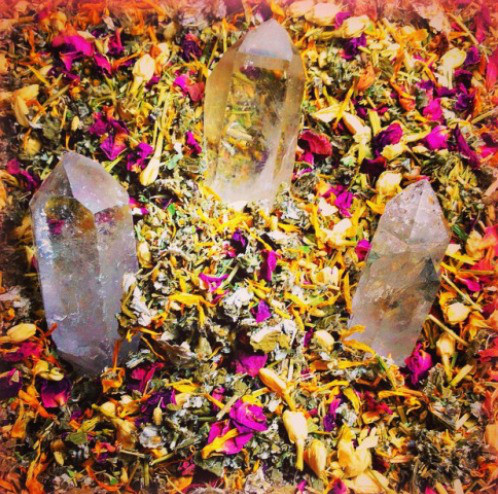

Herbs
I find myself pulling away from more and more commercially made and processed products and making them myself. It's been a bit of a dive down into the rabbit hole, starting with laundry detergent and dishwasher pods, then elderberry syrup, body scrubs and sunscreen, lip balms and detangler etc. The more product labels I read, the more compelled I am to make my own version without all the toxic chemicals and fillers. I am currently making the following products for purchase locally: elderberry syrup, sugar scrubs and sunscreen and will be adding to my product list and will expand to shipping soon.
I am completed Rosemary Gladstar's Herbalist certification through Sage Mountain and trained with a locally renowned and registered herbalist, Kate Bodmann at Rooted Wisdom. Have strep throat or a sinus infection but hate the side effects of turning to antibiotics? There are herbs for that! Did you know Hippocrates, creator of modern medicine and writer of the Hippocratic oath was an herbalist? He healed with herbs and realized you can also harm because plant medicine is a powerful thing. They can get to the root of the problem instead of just masking the symptoms, as many prescriptions do, and with much less risk and side effects. There is definitely a need for modern medicine, but if you haven't given herbs a try, I highly recommend you do. You may be surprised at what a walk through your own backyard can yield/heal. There are many ways to take herbs. Perhaps you have a cupboard full of herbal tea blends. You can also take tinctures or simply cook with them! Before processed foods and having every fruit and vegetable available every season, we would eat what the land provided to us. Mother Earth knows her stuff. Those dandelion roots in the spring are great for a liver to cleanse! Purselane is high in nutrients like the microgreens you purchase at the health market and freely grow in your yard. If your seasonal allergies bother you, a nettle leaf tea or tincture could ease or completely clear your symptoms. A bath with ginger root in it can ease aches and pains and help with colds and fevers. Finding balance through the harmony of living off the earth is empowering, cost-effective and accessible.
While I am mainly utilizing my new skills at home and on family and friends, I encourage you to check out Kate and see her for all of your herbal needs.